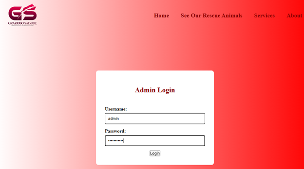
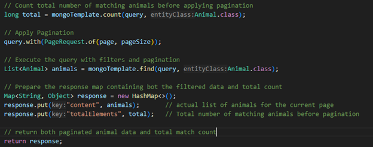

Welcome
My name is Bobby Davis, and I am a passionate and goal-oriented software engineer with a strong foundation in full-stack web development, mobile application development, and secure software design. This portfolio showcases the culmination of my work throughout the Computer Science program at Southern New Hampshire University, including my capstone project where I transformed a Java-based console application into a full-stack web application using Angular, Spring Boot, and MongoDB.
Here you will find detailed explanations of my work in key areas such as software engineering and design, algorithms and data structures, and database development. My goal in this portfolio is to not only present the technical skills I've gained but also demonstrate my ability to build scalable, maintainable, and secure applications that reflect real-world development practices.
I invite you to explore my project walkthroughs, code reviews, and technical demonstrations as you scroll through this page. Thank you for visiting, and I hope this portfolio gives you a clear view of both my technical capabilities and my passion for software engineering.
Professional Self-Assessment
I started the Computer Science program with the goal of transitioning into software engineering. While I had some background in technology and application development, I wanted to develop a much deeper and broader skill set that would prepare me for real-world software engineering roles. Throughout my studies, I've built a strong foundation in programming, data structures, algorithms, web development, mobile development, and database management. My passion for technology has grown even more as I've had the opportunity to design, build, and enhance multiple types of applications using both mobile and full-stack web technologies.
During the program, I developed and published Android applications using Java and Android Studio, which allowed me to gain experience in mobile development, user interface design, and backend integration. As I continued learning, I expanded into full-stack web development, where I worked with both the MEAN (MongoDB, Express, Angular, Node.js) and MERN (MongoDB, Express, React, Node.js) stacks. This helped me develop skills in RESTful API development, asynchronous data handling, secure authentication, and dynamic front-end user experiences.
For my capstone project, I chose to take a console-based Java application I originally developed — a Rescue Animal Management System — and transform it into a fully functional full-stack web application. This project allowed me to apply everything I've learned throughout the program, while also challenging me to learn new technologies such as Spring Boot, JWT-based authentication, and advanced MongoDB query optimization. My final application combines Angular for the front-end, Spring Boot for the back-end, and MongoDB for the database, providing a modern, scalable, and secure system that reflects professional software development practices.
Throughout this project, I applied key software engineering principles such as modular design, MVC (Model-View-Controller) architecture, and secure coding. I also focused heavily on data structures and algorithms while implementing features like filtering, sorting, and pagination to ensure efficient performance as the dataset grows. I worked extensively with MongoDB to design a flexible schema that can handle dynamic data, and built full CRUD functionality to manage rescue animal records, users, and authentication.
In addition to the technical skills, this program has helped me grow tremendously in my ability to communicate professionally, document my work, and organize complex projects. I've learned how to break large problems into smaller, manageable tasks, and how to clearly communicate my work both through written documentation and code reviews. During assignments and project discussions, I learned the value of clear communication. Writing documentation, managing code with version control (Git/GitHub), participating in peer feedback, and presenting technical work have all helped me develop soft skills that are essential in any software engineering role. These professional skills are equally important as technical abilities, and I feel confident in my ability to contribute to software development teams, collaborate with peers, and engage with clients or stakeholders.
Over the course of my studies, I've also developed a strong security mindset. I now approach application development with an understanding of potential vulnerabilities and the importance of securing user data through proper authentication, authorization, and data handling practices. Implementing secure JWT-based authentication in my capstone project was one example where I applied this mindset directly to a real-world system.
Through this program, I've built a solid foundation in both hard and soft skills that I will carry forward in my professional career. My experience with multiple development stacks, mobile and web applications, secure coding, database design, and system architecture has prepared me to step confidently into a software engineering role. I am excited to continue learning, improving, and contributing to meaningful software projects in the future.
Code Review
A code review is a systematic process in which developers examine each other's code to identify bugs, improve code quality, and ensure that the codebase meets industry standards. It promotes collaboration, encourages learning, and helps catch issues early before they become costly problems in production. Code reviews are an essential part of professional software development workflows, used in both open-source and enterprise teams.
The benefits of a code review include improved readability, better maintainability, consistency in coding style, and increased overall reliability of software. It also serves as an opportunity for knowledge sharing and mentoring, making teams more resilient and aligned in their practices.
In the video below, I walk through the original version of my Rescue Animal Management System, a Java-based console program. I then explain the structured enhancements I implemented as part of my CS 499 Capstone Project. These enhancements showcase my skills in software engineering, algorithm design, and full-stack web development using Angular, Spring Boot, and MongoDB. I highlight specific code improvements, architectural decisions, and technical challenges I solved during the transformation of the system into a web application.
Key Enhancements
- Redesigned the UI using Angular for a modern, responsive interface
- Implemented advanced filtering, sorting, and pagination logic
- Integrated a secure RESTful API with Spring Boot and JWT-based authentication
- Utilized MongoDB to store and query dynamic animal data efficiently
Category 1: Software Engineering and Design
The artifact I selected for enhancement is my Rescue Animal Management System, originally developed as a Java-based console application for the IT-145 course. The program allowed users to intake, reserve, and list rescue dogs and monkeys, storing animal data in memory using ArrayList. While it worked for a console environment, it was very limited. It had no real database, no user interface, and no way to use the application outside of development environments.

For this course, I chose to significantly enhance this artifact by transforming it into a full-stack web application using Spring Boot (Java) for the backend, MongoDB for the database, and Angular for the frontend. The result is a fully interactive and responsive application where users can view, filter, and manage rescue animals through a modern web interface.
I chose to include this artifact in my ePortfolio because it showcases both my growth and current capabilities in software design, full-stack development, RESTful APIs, and database management. The project brings together everything I've learned about frontend design, backend development, database storage, and application security. I built a secure backend with Spring Boot that exposes REST API endpoints.


I connected that to an Angular frontend where users can interact with the data. I also added a login system that uses JWT (JSON Web Tokens) and encrypted passwords with BCrypt so only admins can make changes to the animal list.  I changed the code so that dogs and monkeys are now handled through one flexible Animal class, which makes the project easier to expand if we want to add more animals in the future.
The artifact directly supports the course outcome related to software engineering, software design, and databases. It shows that I can build an organized, layered backend, interact with a database, and create a frontend that communicates securely with the backend. I followed the enhancement plan I submitted earlier in the course and have completed the upgrades as planned, so there are no changes needed to my plan. I also made progress on outcomes relating to secure development practices.
Working on this project taught me a lot about how real applications are built. I learned how to connect the frontend and backend through API calls and how to send and verify JWT tokens to protect certain features. I learned how to handle CORS issues, how to upload and display images using Angular and Spring Boot, and how to make the user interface more compact and organized. It wasn't as easy as I thought it would be. One of the biggest challenges I faced was getting the authentication system to work properly and making sure that only admins could perform certain actions. I also had trouble at first getting images to upload and display correctly from the database but eventually solved the problem by improving how the data was stored and retrieved. As I made progress, I also spent time cleaning up the frontend layout to reduce spacing and improve the look and feel of the animal cards.
This enhancement turned a basic, text-based Java program into a complete, real-world application that could actually be used by a rescue organization. It demonstrates my skills in full-stack development, software design, and secure coding. More importantly, it shows my ability to take something simple and build it into something much more powerful and user-friendly. That's why I'm proud to include this project in my ePortfolio as a reflection of my skills, my growth, and my ability to deliver professional-quality work.

Category 2: Algorithms and Data Structures
The artifact I selected for this milestone is a full-stack web application originally developed as a console-based Java Program for managing rescue animals. The original program used arrays and procedural logic to handle user input and manage animal data entirely in memory using ArrayLists. Each operation required manual iteration through lists using basic for-loops, which resulted in O(n) time complexity for searching and filtering operations.
To align with the Algorithms and Data Structures category, I enhanced the application by adding dynamic filtering, sorting, and efficient querying capabilities. The updated version stores animal records in MongoDB, uses Spring Boot for the backend, and Angular for the frontend. Filtering logic was redesigned to use database queries instead of in-memory loops, allowing multiple filters such as animal type, size, age range, and availability, along with sorting options.
Filtering Enhancements
Originally, searching for animals involved scanning each item in the list manually, which becomes inefficient for large datasets. In the enhanced version, this is replaced by MongoDB queries using indexed fields, significantly improving query time to O(log n) or even O(1) for simple lookups. The filtering system was implemented using checkboxes and numerical inputs that dynamically update query parameters sent to the backend. The backend constructs MongoDB queries based on active filters, validating parameters before building the query to avoid conflicting filters.
Original Linear Search Example:
for (Dog dog : dogList) {
if (dog.getTrainingStatus().equalsIgnoreCase("in service") && !dog.getReserved()) {
availableList.add(dog);
}
}
Enhanced MongoDB Filtering:

Sorting Enhancements
Originally, animals were displayed in the order they were added, with no sorting options. In the enhanced version, sorting is implemented using Spring Data's Sort object. Users select sorting options from a dropdown, which are passed to the backend where sorting is applied directly in the MongoDB query.

Pagination and Reset
Pagination was added to keep the frontend responsive by limiting results displayed per page. A reset button allows users to clear all filters and start fresh.
Enhancement Pagination Backend Code:
Real-World Problem Solving
During development, I encountered issues with overlapping filter conditions when multiple filters were active at the same time. The backend received conflicting query parameters, resulting in unpredictable results. I solved this by restructuring the query building logic to validate each parameter individually before applying it to the MongoDB query. This greatly improved both the stability and scalability of the filtering system.
UI with Enhancements
Course Outcomes Demonstrated
This enhancement supports course outcome 3 by applying algorithmic thinking to improve data filtering, sorting, and searching. It also supports course outcome 4 by applying professional tools like MongoDB, Spring Boot, and Angular to create a modern, efficient, and scalable system.